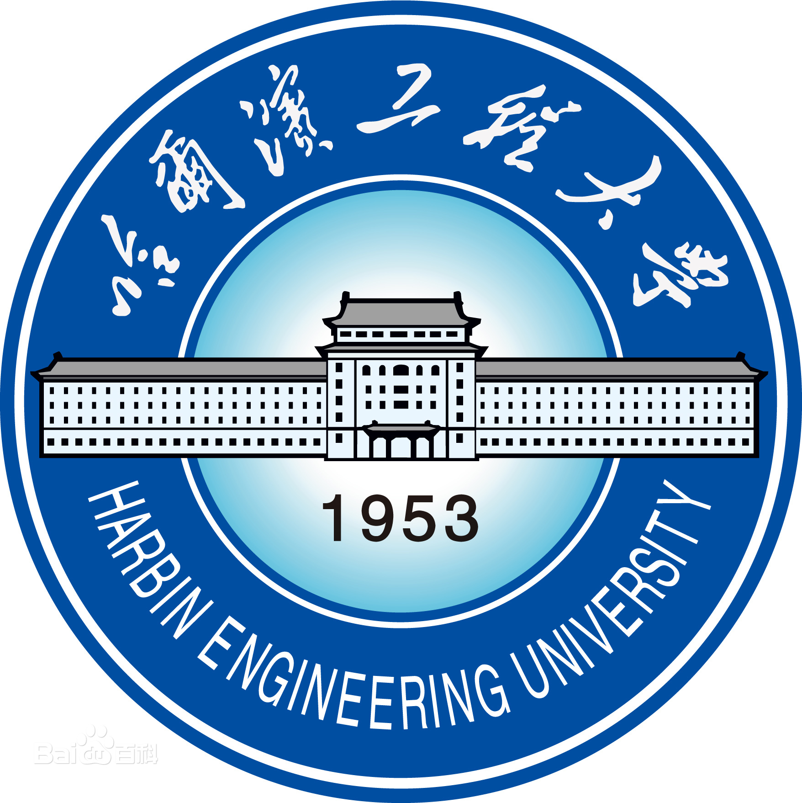

About Me
I am currently a Senior AI Research Engineer at Nota AI, specializing in hardware-aware Large Language Model (LLM) quantization, inference optimization, and compression. Previously, I worked at Xiaomi as a Machine Learning Engineer, where I focused on accelerating Xiaomi LLM and developing large-scale recommender systems. I received an M.S. in Computer Science from Seoul National University, advised by Prof. U Kang, with research in deep learning model compression.
Experience
Senior AI Research Engineer Jul. 2023 - Present
Nota AI Seoul, Republic of Korea
Machine Learning Engineer Oct. 2021 - Jun. 2023
Xiaomi AI Lab Beijing, China
Research Assistant Aug. 2019 - Aug. 2021
Data Mining Lab @ SNU Seoul, Republic of Korea
Education

Publications
-
EdgeFusion: On-Device Text-to-Image Generation
-
SensiMix: Sensitivity-Aware 8-bit Index & 1-bit Value Mixed Precision Quantization for BERT Compression